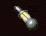
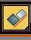
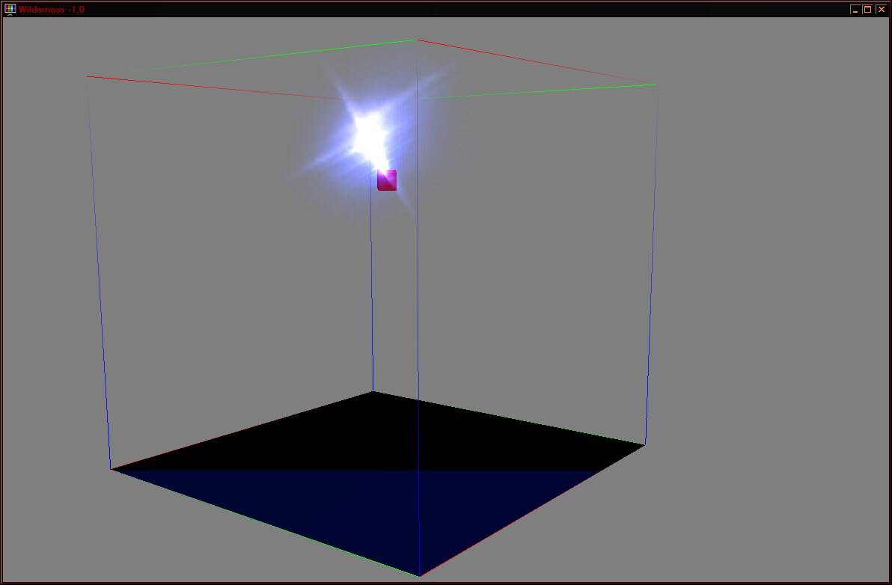

Particles Ray Trasing and Reflection effects
Частицы весьма капризный и не стабильный элемент, однако и на эту хитрую жучку нашлась управа!
Что оказалось весьма и весьма Внушительно.
Метод добавления эффекта только через нифскоп с указанием критически важного момента:
Экспорт в МВ:
Нифтулз - в пролете! Увы, это его любимое занятие.
На примере массива частиц Pcloud.
Можно использовать любые другие типы частиц, но для примера воспользуемся этим.
1. Добавьте в сцену плоскость.
Размер 256, кол-во полигонов и прочее неважно.
Разместите ее в нулевых координатах.
Плоскость может выполнять роль эмиттера, так и покажет работу эффектов (освещения).
Материал можно не назначать.
Этот момент критически важен!
Наличие "физического" объекта совершенно необходимо для работы эффектов по частицам!
О чем см. далее.
2. Создайте Pcloud и также поместите над плоскостью.
Диаметр 256х256х256.
Box emitter (тип эмиттера) Отдельно выбирать эмиттер, теперь, не нужно. Т.к. Pcloud!
Emit Rate 30 (кол-во частиц, для достижения красивого эффекта их нужно много!)
Start -15 (не важно, допиливать все равно в нифскопе).
Size 100. (размер. Размер играет значение!)
Все остальное можно не трогать.
Частиц должно быть много и они должны быть большими, иначе не получится нормального светового конуса!
3. Назначьте частицам материал.
Используйте (для теста) эти текстуры:
- базовая текстура vfx_bluecloud.dds
- дарк vfx_blueglow.dds
- глосс текстуру в материал, добавлять не нужно, т.к. частицы отображаются символами.
Настройки шейдинга материала см. скрин - это сразу даст
13 флаг альфы для частиц.
4. Теперь добавьте в сцену источник света.
Free spot - это создаст фонарик.
Дайте ему имя для удобства ориентации в сцене и поместите его в центр массива частиц.
Настройки - оставить по умолчанию.
5. Сразу после создания и размещения, создайте копию фонарика!
Т.е. CLONE.
Для удобства можно переименовать фонарики.
Первый - tx_effect.
Второй - la_effect
6. Возвращаемся в редактор материалов.
Добавьте на любой материала текстуру которая будет изображать из себя свет.
Например: vfx_bluehilite.dds из ванильного набора текстур.
Раскройте список MAP этого материала.
7. возвращаемся к Фонарику.
Выбираем тот который tx_effect и в настройках оного:
advanced effect -> projector map.
Перетащите ту текстуру из раскрытого списка MAP материала.
Просто хватайте мышью и тащите.
Это назначит текстуру на слот Прожектора.
Второй фонарик не трогаем!
Он не будет иметь текстуры и оказывает повертексное освещение модели в целом.
8. Выделите частицы и их плоскость.
И вызывайте: includes\excludes tools. 
В появившемся окне Assign to Light последовательно выберите оба источника света.
Т.е. оба фонарика должны быть выбраны как воздействующие на частицы и их эмиттер.
Теперь Важный момент!
Если этого не сделать, то эффект на частицах может не заработать!
Выбираем частицы и помещаем в группу!
Т.е. требуется создать группу из частиц и их эмиттера.
Поскольку эмиттер в Pcloud "встроенный" достаточно выделить только сами частицы.
Если эмиттером указан другой объект в сцене, выбираем его и частицы -> Group.
Вновь, вызываем includes\excludes tools - применяем его уже на группу.
Да, стабильный результат получается, если вызвать includes\excludes 2 раза.
Сначала назначив эффекты на частицы и эмиттер, а потом и на всю группу.
Если назначить эффекты на группу сразу, может получиться, что эффект окажется только на самой группе, но не на вложенных в нее объектах.
Возможно это проблема экспортера, либо что-то еще.
Так или иначе, надежнее будет вызывать включение наложения эффектов 2 раза.
9. Собственно это все, можно экспортировать!
Экспортер корректно пропишет текстурные эффекты в ноду эмиттера и в ноду частиц.
Основная "плюшка" метода, это includes\excludes tools, которая позволяет назначать эффект освещения частицам.
Если ее не использовать, эффекты освещения не будут добавлены на частицы при экспорте.
А также, самое главное!
Критичеси необходим "физический" объект. Ака, нужен шейп.
Т.е. нода с эмиттером должна обязательно содержать статичную поверхность (шейп) на основе которого и будет проводится расчет наложения текстуры на сами частицы.
Собственно, здесь, формально именно нода частиц получает шейп, но при экспорте, он (шейп) будет выделен (добавлен) в ноду эмиттера.
А частицы останутся сами по себе вне всяких других нод, т.е. в корне файла.
10. Но давайте немного усложним сцену перед экспортом!
Создайте примитив куб и разместите его над фонариками.
Т.е. над их основаниями, так чтобы их точки опоры находились на кромке куба.
Для этого удобно использовать Align tool.
Создайте куб, вызовите Align и кликните по фонарику, установите точки опоры.

иконка этого инструмента, да.Далее!
Через Select&Link прикрепите фонарики к кубу.
Это позволит создать анимации движения света, как в ручном, так и в "автоматическом" режиме.
Можно сделать анимации, вращая и двигая кубик.
Но можно сделать немного иначе!
Теперь кубик стал Билборд объектом.
11. Теперь все!
Проводите экспорт.
12. Откройте редактор не загружая никаких плагинов.
Создайте новый активатор, указав получившийся Ниф файл.
Перетащите в окно рендеринга.
Где будет видно примерно такое:
Пока, ничего примечательного, но уже все отображается корректно, что и требовалось проверить!
13. Переходим в Нифскоп, для финальной полировки!
(это тот второй фонарик la_effect) собственно эффект уже будет иметь это название.
->
Cutoff Angle = 25
Exponent = 100.
(это первый фонарик с названием tx_effect)
Clipping Plane
Rotation = X0, Y0, Z-1. Т.е. измените Z = -1.
Да, здесь, крайне важно включить саму плоскость отсечения и установить вектор, по какой из плоскостей оно будет работать!
Start Time = -5, т.е. время старта поставить в отрицательное положение.
Stop Time = 0.
Emit Start Time = -5
Emit Stop Time = -5
Lifetime = 1
Size = 50
Основное что надо было поправить, это:
- отключение NiBSParticleNode. Кроме как для переносных светильников, это можно не использовать!
- включение более точной локализации потока света. Через установку Exponent.
- и исправление времени появления частиц.
К сожалению, 3д МАХ не позволяет сразу выставить эти параметры.
14. Сохраняйте ниф файл и смотрите что получилось!
Если все прошло правильно и эффекты наложились корректно, должно получиться что-то вроде такого:

Покрутите модель в сцене и смотрите как искры реагируют на смещение камеры.
Это работа Билборда, да.
15. Возвращаемся в Ниф и:
NiBillboardNode -> NiNode.
Т.е. превращаем обратно в обычную ноду.
16. и смотрим в КС!
Если вы это видите, поздравляем! У Вас получилось получить!
Или создание имитации трассировки луча в массиве частиц.
niLight - добавляет света по центру луча.
17. можете провести еще несколько "наблюдений".
- отключите ДаркКарту.
- отключите плоскость отсечения в эффекте.
В КС должно получиться такое:
Да, эффект стал грубее и появился луч направленный в обратную сторону от основного.
Верните Дарк карту и снова включите плоскость отсечения.
Замените текстуру в эффекте, на: vfx_poisonglow.dds
Посмотрите что получилось в редакторе:
А теперь, на: vfx_firealpha01.dds
Вернитесь в Нифскоп и настройках текстурного эффекта:
Clipping Plane
AreaSize = 20.0000
Это размер, ака зона влияния, плоскости отсечения.
Это позволяет убирать "стену света", что возникает в случае использования текстур со слишком малым значением прозрачности альфа канала по краям.
Главное, правильно применять includes\excludes tools на частицы и их эмиттер, а также наличие статичной геометрии!
Которую можно скрывать если она не нужна по факту.
Для удобства также можно создавать маркеры, которые и использовать в качестве статики.
Примечание.
Примечание.
Кроме fSpot можно использовать другие типы светильников МАХа.
При этом Omni всегда дает ENVIRONMENT эффект.
Можно комбинировать несколько типов светильников в одном файле.
Который снабдить картой бампа и глосса, для лучшего контроля и эффективности.
Примечание.
Можно применить 2 fSpot с текстурами в МАХе, затем один из них преобразовать:
Из EFFECT_PROJECTED_LIGHT в EFFECT_ENVIRONMENT_MAP.
Это позволит добавить блеск на частицы.
Частицы могут содержать Бамп.
Примечание.
В файле может быть несколько систем частиц с разными сочетаниями эффектов.
Примечание.
Добавлять источник света в режиме light, как было сделано в этой заметке - необязательно.
Можно использовать один тип эффекта. Здесь это описано для полноты данных.
Также, есть мнение, что частицы с таким методом освещения, могут иметь проблемы с МГЕ в режиме PPL.
Примечание.
Для анимации движения частиц, лучше использовать Гравитацию, чем менять их собственные настройки.
Т.е. гравитация сможет более эффективно передвигать частицы, особенно если это Pcloud.
Примечание.
Таким образом, играя текстурами можно получать крайне Внушительные результаты!
Начиная от создания прожекторов, до красивых эффектов на оружии, которые не возможно получать с использованием только одних спрайтов.
Создание красивых частиц из Thief3 - также возможно!
При этом, если использовать более сложные текстуры, можно создавать "тени" от рам окна, вращающихся вентиляторов и пр.!
Т.к. объект к которому прикреплены источника света, может иметь полноценные анимации движения и вращения!
Т.е. если добавить к объекту карту декалей, получится дополнительно управлять зоной по которой будет работать текстурный эффект в режим Light!
Впрочем, карта декалей будет уместнее на статических объектах.
Т.е. на шейпе стены на которую будет падать тень от рамы окна проходя, перед этим, через частицы.
На сами частицы можно наложить отдельную текстуру проекции света исходящего из окна, да.